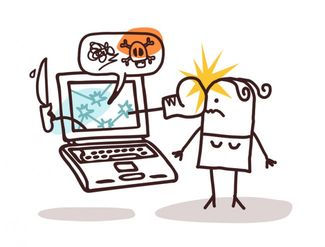

¿Qué es MOCIBA?
El Instituto Nacional de estadística y Geografía (INEGI) realiza por primera vez el levantamiento del
Módulo sobre Ciberacoso, el cuál es un censo en que se aborda un tema emergente como lo es el acoso por medios electrónicos,
el cuál es una forma de victimización cuyo estudio ha adquirido relevancia a partir del uso intensificado de Internet, telefonía móvil y TIC's en general.
El tamaño de la muestra fué de 90,024 viviendas, donde se fijó un máximo de 4000 viviendas
por entidad.
El muestreo es probabilístico, estratificado y por conglomerados.

Su origen
En la actualidad, todas las facetas de la vida en el ambito empresarial, cultural o de ocio
dependen de las TIC, esto ante la necesidad de estar comunicados entre distintas partes de territorio nacional
e internacional.
Paralelamente, han ido surgiendo nuevos tipos de acoso a nivel mundial,
ya que se trata de una nueva forma de violencia que se investiga por parte de diversos gobiernos o instituciones debido al número de casos reportados
y por la repercusión que tiene en la vida de las personas dentro de la sociedad y su consecuencia de los daños y prejuicios que provoca
en distintos aspectos de la salud mental y física de las personas.

Ciberacoso
El Ciberacoso supone una intromisión de una naturaleza repertitiva en la vida íntima de una persona,
utilizando para ello medios electrónicos, fundamentalmente Internet y telefonos celulares.
Se presenta de forma encubierta porque las víctimas son atacadas a través de redes sociales o de las TIC sin otro
objetivo que inflingir maltratos y denigraciones.